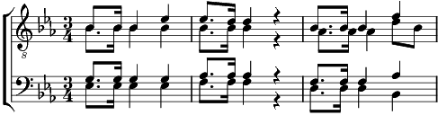

1. Sur nos monts, quand le soleil
Annonce une brillant réveil,
Et prédit d'un plus beau jour le retour,
Les beautés de la patrie
Parlent à l'âme attendrie;
Au ciel montent plus joyeux, (bis)
Les accents d'un cœur pieux,
Les accents émus d'un cœur pieux.
2. Lorsqu'un doux rayon du soir
Joue encore dans le bois noir,
Le cœur se sent plus heureux, près de Dieu.
Loin des vains bruits de la plaine
L'âme en paix est plus sereine;
Au ciel montent plus joyeux, (bis)
Les accents d'un cœur pieux,
Les accents émus d'un cœur pieux.
3. Lorsque dans la sombre nuit
La foudre éclate avec bruit,
Notre cœur pressent encore le Dieu fort;
Dans l'orage et la détresse,
Il est notre forteresse.
Offrons-lui des cœurs pieux, (bis)
Dieu nos bénira des cieux,
Dieu nous bénira du haut des cieux.